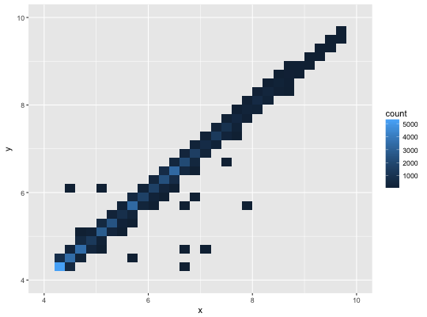
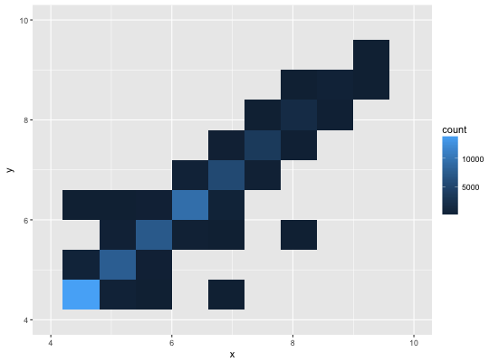
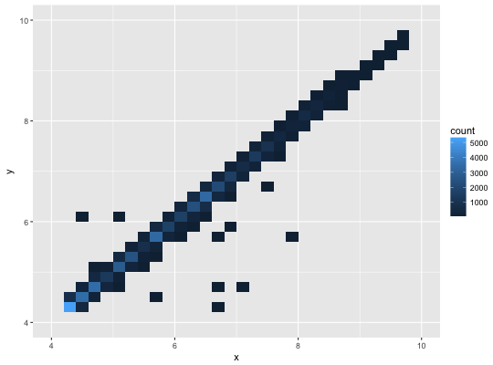
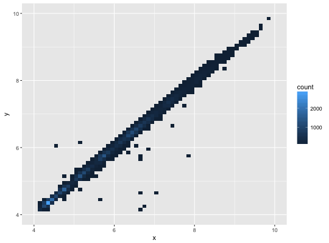

Divides the plane into rectangles, counts the number of cases in
each rectangle, and then (by default) maps the number of cases to the
rectangle's fill. This is a useful alternative to geom_point
in the presence of overplotting.
geom_bin2d(mapping = NULL, data = NULL, stat = "bin2d", position = "identity", ..., na.rm = FALSE, show.legend = NA, inherit.aes = TRUE) stat_bin_2d(mapping = NULL, data = NULL, geom = "tile", position = "identity", ..., bins = 30, binwidth = NULL, drop = TRUE, na.rm = FALSE, show.legend = NA, inherit.aes = TRUE)
Set of aesthetic mappings created by aes or
aes_. If specified and inherit.aes = TRUE (the
default), it is combined with the default mapping at the top level of the
plot. You must supply mapping if there is no plot mapping.
The data to be displayed in this layer. There are three options:
If NULL, the default, the data is inherited from the plot
data as specified in the call to ggplot.
A data.frame, or other object, will override the plot
data. All objects will be fortified to produce a data frame. See
fortify for which variables will be created.
A function will be called with a single argument,
the plot data. The return value must be a data.frame., and
will be used as the layer data.
Position adjustment, either as a string, or the result of a call to a position adjustment function.
other arguments passed on to layer. These are
often aesthetics, used to set an aesthetic to a fixed value, like
color = "red" or size = 3. They may also be parameters
to the paired geom/stat.
If FALSE, the default, missing values are removed with
a warning. If TRUE, missing values are silently removed.
logical. Should this layer be included in the legends?
NA, the default, includes if any aesthetics are mapped.
FALSE never includes, and TRUE always includes.
If FALSE, overrides the default aesthetics,
rather than combining with them. This is most useful for helper functions
that define both data and aesthetics and shouldn't inherit behaviour from
the default plot specification, e.g. borders.
Use to override the default connection between
geom_bin2d and stat_bin2d.
numeric vector giving number of bins in both vertical and horizontal directions. Set to 30 by default.
Numeric vector giving bin width in both vertical and
horizontal directions. Overrides bins if both set.
if TRUE removes all cells with 0 counts.
stat_bin2d understands the following aesthetics (required aesthetics are in bold):
x
y
fill
group
stat_binhex for hexagonal binning
#> Warning: Removed 478 rows containing non-finite values (stat_bin2d).# You can control the size of the bins by specifying the number of # bins in each direction: d + geom_bin2d(bins = 10)#> Warning: Removed 478 rows containing non-finite values (stat_bin2d).#> Warning: Removed 4 rows containing missing values (geom_tile).d + geom_bin2d(bins = 30)#> Warning: Removed 478 rows containing non-finite values (stat_bin2d).# Or by specifying the width of the bins d + geom_bin2d(binwidth = c(0.1, 0.1))#> Warning: Removed 478 rows containing non-finite values (stat_bin2d).